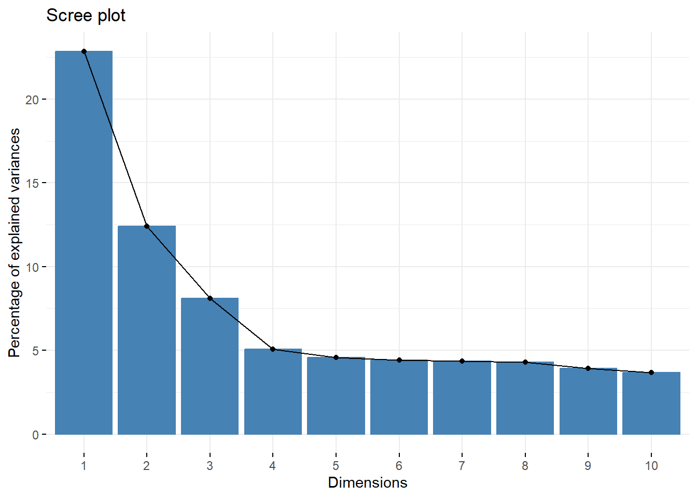
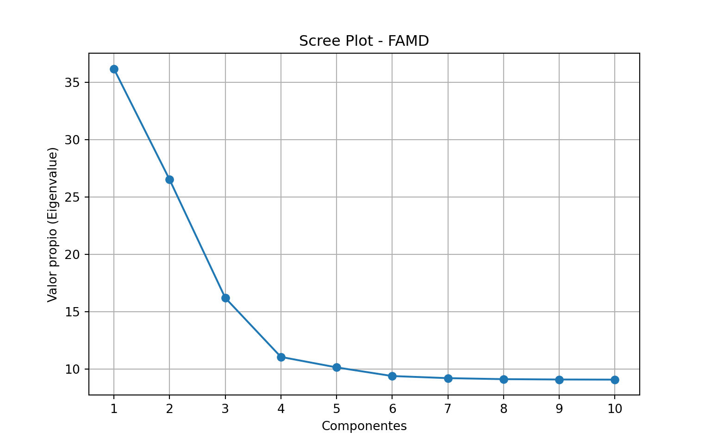
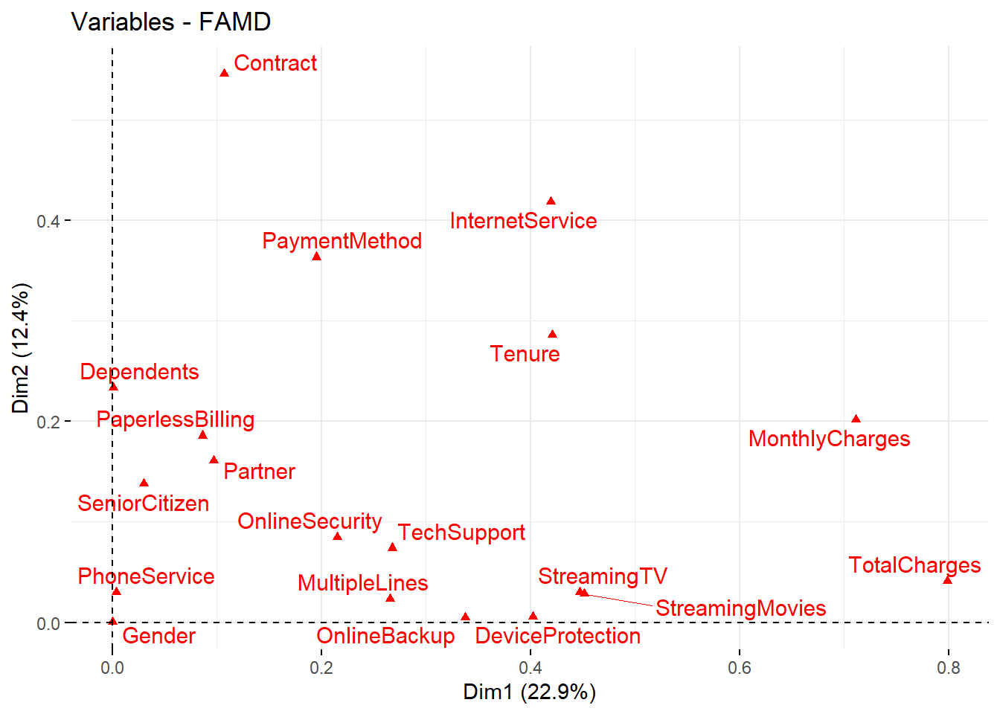
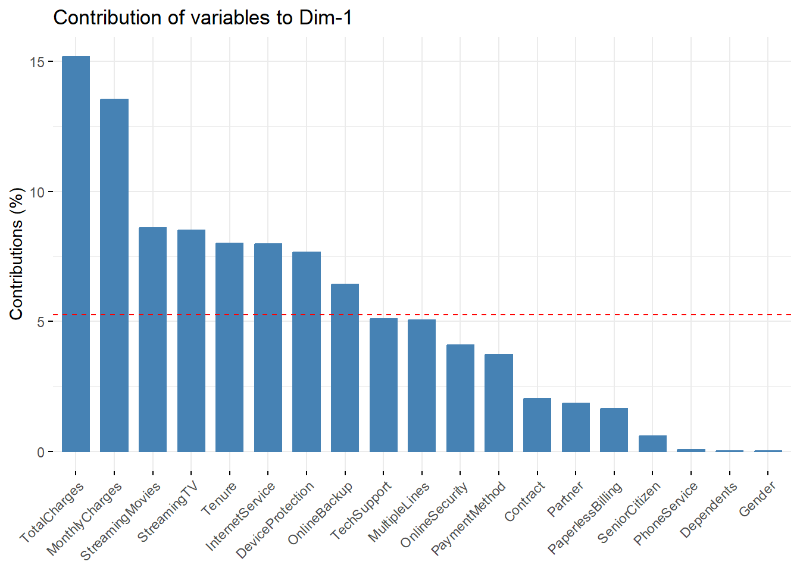
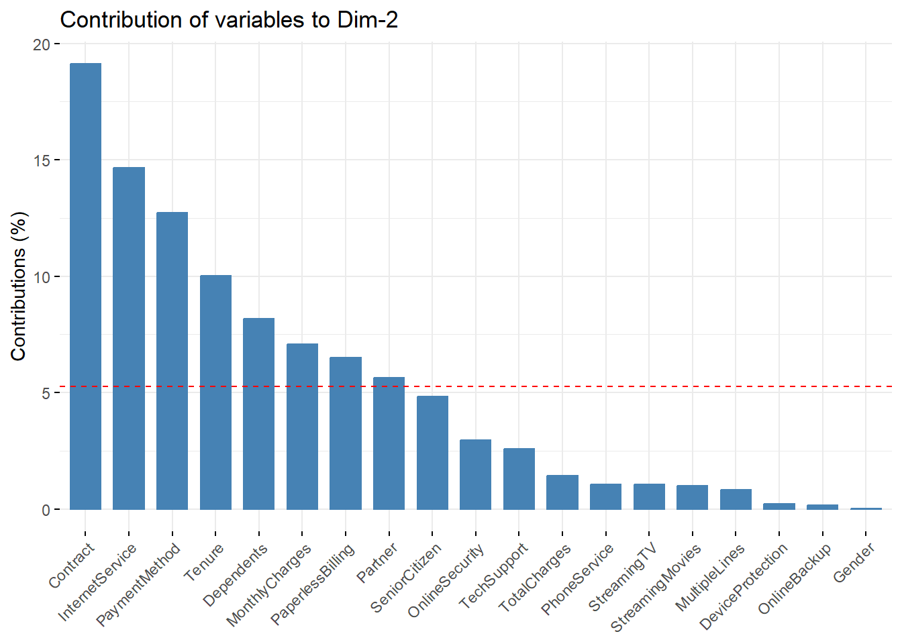
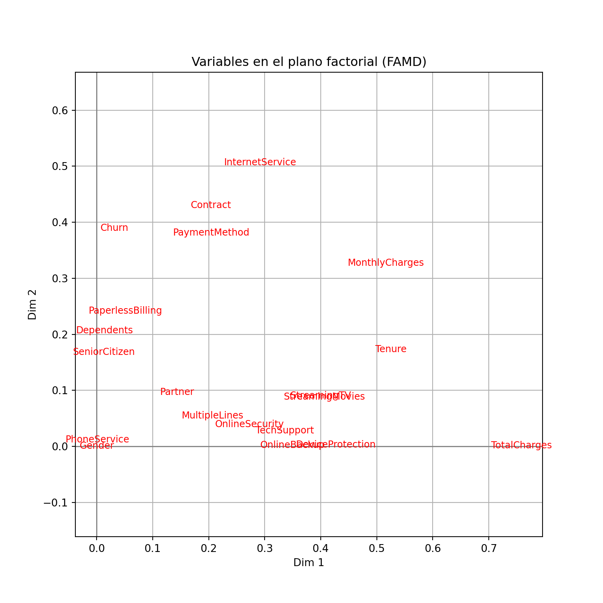
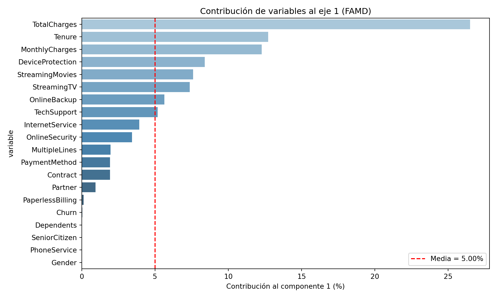
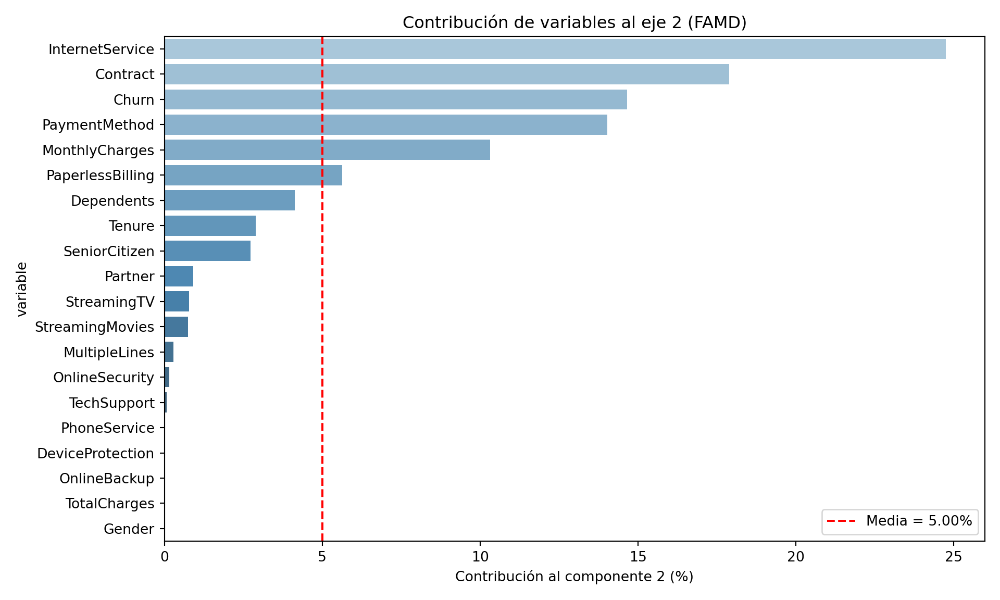
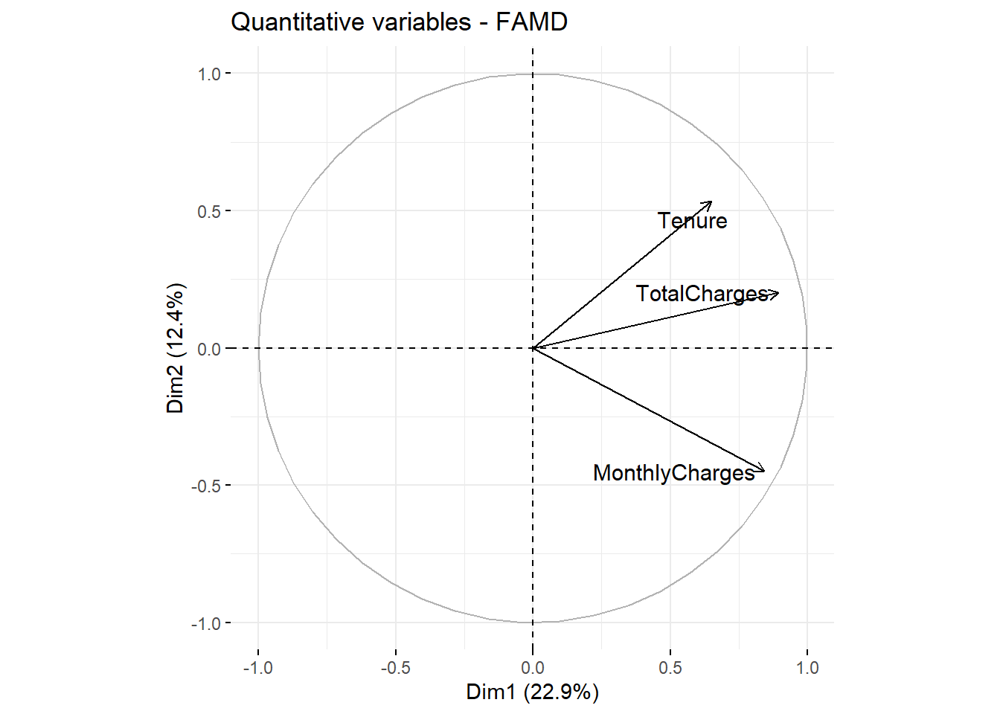
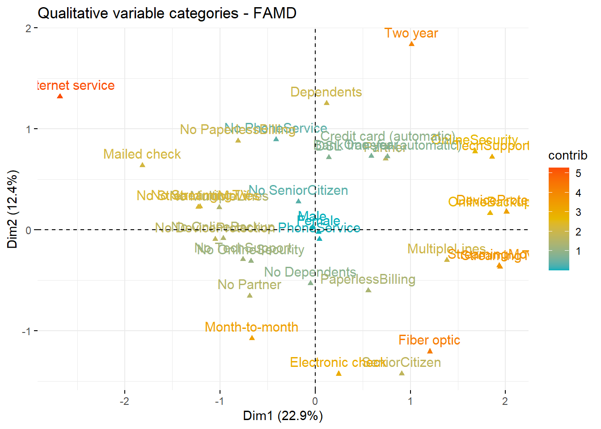

flowchart TD
cat?(¿BBDD Categorica?) --> |"✅"| num_too?(¿Contiene numéricas?)
num_too? --> |"✅"| FAMD
num_too? --> |"❌"| multiple_cat?(¿Más de dos columnas?)
multiple_cat? --> |"✅"| MCA
multiple_cat? --> |"❌"| CA
cat? --> |"❌"| groups?(¿Columnas agrupadas?)
groups? --> |"✅"| MFA
groups? --> |"❌"| shapes?(Analysing shapes?)
shapes? --> |"✅"| GPA
shapes? --> |"❌"| PCA
Anàlisis factorial per a Dades mixtes (FAMD)
1 Introducción
El Análisis Factorial de Datos Mixtos (FAMD) es una potente técnica estadística que se utiliza para analizar conjuntos de datos que contienen variables numéricas y categóricas. Amplía el análisis factorial tradicional para gestionar tipos de datos mixtos, proporcionando una comprensión integral de la estructura subyacente de conjuntos de datos complejos.
Para poder realizar los métodos, necesitaremos importar las siguientes librerias:
## Import libraries
library(FactoMineR)
library(factoextra)import prince
from light_famd import FAMD
import pandas as pd
import matplotlib.pyplot as plt
import seaborn as sns2 Planteamiento del problema
Descripció de la columna:
Gender: El gènere del client: Home (1), Femení (0).
SeniorCitizen: Indica si el client té 65 anys o més: No (0), Sí (1).
Partner: El contracte de servei és revenut pel soci: No (0), Sí (1).
Dependents: Indica si el client viu amb algun dependent: No (0), Sí (1).
Tenure: Indica l’import total de mesos que el client ha estat amb l’empresa.
PhoneService: Indica si el client es subscriu al servei de telèfon de casa amb l’empresa: No (0), Sí (1).
MultipleLines: Indica si el client es subscriu a diverses línies telefòniques amb l’empresa: No (0), Sí (1).
InternetService: Indica si el client es subscriu al servei d’Internet amb l’empresa: No (0), DSL (1), Fibra òptica (2).
OnlineSecurity: Indica si el client es subscriu a un servei addicional de seguretat en línia prestat per l’empresa: No (0), Sí (1), NA (2).
OnlineBackup: Indica si el client es subscriu a un servei de backup online addicional proporcionat per l’empresa: No (0), Sí (1), NA (2).
DeviceProtection: Indica si el client es subscriu a un pla addicional de protecció de dispositius per als seus equips d’Internet proporcionats per l’empresa: No (0), Sí (1), NA (2).
TechSupport: Indica si el client es subscriu a un pla de suport tècnic addicional de l’empresa amb temps d’espera reduïts: No (0), Sí (1), NA (2).
StreamingTV: Indica si el client utilitza el seu servei d’Internet per transmetre la programació de televisió d’un proveïdor de tercers: No (0), Sí (1), NA (2). L’empresa no cobra cap càrrec addicional per aquest servei.
StreamingMovies: Indica si el client utilitza el seu servei d’Internet per transmetre pel·lícules d’un proveïdor de tercers: No (0), Sí (1), NA (2). L’empresa no cobra cap càrrec addicional per aquest servei.
Contract: Indica el tipus de contracte actual del client: Mes a mes (0), Un any (1), Dos anys (2).
PaperlessBilling: Indica si el client ha triat facturació sense paper: No (0), Sí (1).
PaymentMethod: Indica com el client paga la seva factura: transferència bancària - automàtica (0), targeta de crèdit - automàtica (1), xec electrònic (2), xec per correu (3).
MonthlyCharges: Indica el total de la quota mensual actual del client per a tots els seus serveis de l’empresa.
TotalCharges: Indica el total de càrrecs del client.
Churn: Indica si el client es talla o no: No (0), Sí (1).
## Import data
df <- read.csv('https://raw.githubusercontent.com/nchelaru/data-prep/refs/heads/master/telco_cleaned_renamed.csv')
## Preview data
head(df) Gender SeniorCitizen Partner Dependents Tenure PhoneService
1 Female No SeniorCitizen Partner No Dependents 1 No PhoneService
2 Male No SeniorCitizen No Partner No Dependents 34 PhoneService
3 Male No SeniorCitizen No Partner No Dependents 2 PhoneService
4 Male No SeniorCitizen No Partner No Dependents 45 No PhoneService
5 Female No SeniorCitizen No Partner No Dependents 2 PhoneService
6 Female No SeniorCitizen No Partner No Dependents 8 PhoneService
MultipleLines InternetService OnlineSecurity OnlineBackup
1 No MultipleLines DSL No OnlineSecurity OnlineBackup
2 No MultipleLines DSL OnlineSecurity No OnlineBackup
3 No MultipleLines DSL OnlineSecurity OnlineBackup
4 No MultipleLines DSL OnlineSecurity No OnlineBackup
5 No MultipleLines Fiber optic No OnlineSecurity No OnlineBackup
6 MultipleLines Fiber optic No OnlineSecurity No OnlineBackup
DeviceProtection TechSupport StreamingTV StreamingMovies
1 No DeviceProtection No TechSupport No StreamingTV No StreamingMovies
2 DeviceProtection No TechSupport No StreamingTV No StreamingMovies
3 No DeviceProtection No TechSupport No StreamingTV No StreamingMovies
4 DeviceProtection TechSupport No StreamingTV No StreamingMovies
5 No DeviceProtection No TechSupport No StreamingTV No StreamingMovies
6 DeviceProtection No TechSupport StreamingTV StreamingMovies
Contract PaperlessBilling PaymentMethod MonthlyCharges
1 Month-to-month PaperlessBilling Electronic check 29.85
2 One year No PaperlessBilling Mailed check 56.95
3 Month-to-month PaperlessBilling Mailed check 53.85
4 One year No PaperlessBilling Bank transfer (automatic) 42.30
5 Month-to-month PaperlessBilling Electronic check 70.70
6 Month-to-month PaperlessBilling Electronic check 99.65
TotalCharges Churn
1 29.85 No Churn
2 1889.50 No Churn
3 108.15 Churn
4 1840.75 No Churn
5 151.65 Churn
6 820.50 ChurnVisualizamos la estructura de los datos:
str(df)'data.frame': 7032 obs. of 20 variables:
$ Gender : chr "Female" "Male" "Male" "Male" ...
$ SeniorCitizen : chr "No SeniorCitizen" "No SeniorCitizen" "No SeniorCitizen" "No SeniorCitizen" ...
$ Partner : chr "Partner" "No Partner" "No Partner" "No Partner" ...
$ Dependents : chr "No Dependents" "No Dependents" "No Dependents" "No Dependents" ...
$ Tenure : int 1 34 2 45 2 8 22 10 28 62 ...
$ PhoneService : chr "No PhoneService" "PhoneService" "PhoneService" "No PhoneService" ...
$ MultipleLines : chr "No MultipleLines" "No MultipleLines" "No MultipleLines" "No MultipleLines" ...
$ InternetService : chr "DSL" "DSL" "DSL" "DSL" ...
$ OnlineSecurity : chr "No OnlineSecurity" "OnlineSecurity" "OnlineSecurity" "OnlineSecurity" ...
$ OnlineBackup : chr "OnlineBackup" "No OnlineBackup" "OnlineBackup" "No OnlineBackup" ...
$ DeviceProtection: chr "No DeviceProtection" "DeviceProtection" "No DeviceProtection" "DeviceProtection" ...
$ TechSupport : chr "No TechSupport" "No TechSupport" "No TechSupport" "TechSupport" ...
$ StreamingTV : chr "No StreamingTV" "No StreamingTV" "No StreamingTV" "No StreamingTV" ...
$ StreamingMovies : chr "No StreamingMovies" "No StreamingMovies" "No StreamingMovies" "No StreamingMovies" ...
$ Contract : chr "Month-to-month" "One year" "Month-to-month" "One year" ...
$ PaperlessBilling: chr "PaperlessBilling" "No PaperlessBilling" "PaperlessBilling" "No PaperlessBilling" ...
$ PaymentMethod : chr "Electronic check" "Mailed check" "Mailed check" "Bank transfer (automatic)" ...
$ MonthlyCharges : num 29.9 57 53.9 42.3 70.7 ...
$ TotalCharges : num 29.9 1889.5 108.2 1840.8 151.7 ...
$ Churn : chr "No Churn" "No Churn" "Churn" "No Churn" ...pydf = pd.read_csv('https://raw.githubusercontent.com/nchelaru/data-prep/refs/heads/master/telco_cleaned_renamed.csv')Visualizamos la estructura de los datos:
pydf.info()<class 'pandas.core.frame.DataFrame'>
RangeIndex: 7032 entries, 0 to 7031
Data columns (total 20 columns):
# Column Non-Null Count Dtype
--- ------ -------------- -----
0 Gender 7032 non-null object
1 SeniorCitizen 7032 non-null object
2 Partner 7032 non-null object
3 Dependents 7032 non-null object
4 Tenure 7032 non-null int64
5 PhoneService 7032 non-null object
6 MultipleLines 7032 non-null object
7 InternetService 7032 non-null object
8 OnlineSecurity 7032 non-null object
9 OnlineBackup 7032 non-null object
10 DeviceProtection 7032 non-null object
11 TechSupport 7032 non-null object
12 StreamingTV 7032 non-null object
13 StreamingMovies 7032 non-null object
14 Contract 7032 non-null object
15 PaperlessBilling 7032 non-null object
16 PaymentMethod 7032 non-null object
17 MonthlyCharges 7032 non-null float64
18 TotalCharges 7032 non-null float64
19 Churn 7032 non-null object
dtypes: float64(2), int64(1), object(17)
memory usage: 1.1+ MBLos datos contienen 20 columnas divididas en: - Numéricas: Tenure, MonthlyCharges y TotalCharges - Categóricas: Gender, SeniorCitizen, Partner, Dependents, PhoneService, MultipleLines, InternetService, OnlineSecurity, OnlineBackup, DeviceProtection, TechSupport, StreamingTV, StreamingMovies, Contract, PaperlessBilling, PaymentMethod y Churn (variable respuesta)
Consejo
El objetivo de este estudio es poder estudiar las relaciones y asociaciones que existen en los clientes de la empresa Telecom.
2.1 Entrenamiento
La función FAMD() del paquete FactoMineRse puede utilizar para calcular los planos factoriales. La descripción de la función es la siguiente:
FAMD (base, ncp = 5, sup.var = NULL, ind.sup = NULL, graph = TRUE)base: Undata.framecon n filas (individuos) y p columnas (variables).ncp: El número de dimensiones que se mantienen en los resultados (por defecto 5)sup.var: Un vector que indica los índices de las variables suplementarias.ind.sup: Un vector que indica los índices de los individuos suplementarios.graph: Un valor lógico. Si esVERDADERO, se muestra un gráfico.
A continuación, vamos a calcular el FAMD de la siguiente manera:
## FAMD
res.famd <- FAMD(df, sup.var = 20, graph = FALSE, ncp = 25)La salida que obtenemos con la función FAMD() es una lista que incluye:
print(res.famd)*The results are available in the following objects:
name description
1 "$eig" "eigenvalues and inertia"
2 "$var" "Results for the variables"
3 "$ind" "results for the individuals"
4 "$quali.var" "Results for the qualitative variables"
5 "$quanti.var" "Results for the quantitative variables"La función prince.FAMD() del paquete princese puede utilizar para calcular los planos factoriales. La descripción de la función es la siguiente:
famd = prince.FAMD(n_components = 2, n_iter = 3, copy = True, check_input = True,
random_state = 42, engine = "sklearn", handle_unknown = "error")n_components: El número de dimensiones que se mantienen en los resultados (por defecto 2)n_iter: El número de iteraciones de las cuales ha de realizar el FAMD (por defecto 3)copy: Indica si queremos realizar una copia o por el contrario de la base de datoscheck_input: Valida las variables de entradarandom_state: Asigna una semilla para los cálculos
A continuación, vamos a calcular el FAMD de la siguiente manera:
famd = prince.FAMD(n_components=10, random_state=42)
famdPy = famd.fit(pydf)2.2 Visualización e interpretación
Utilizaremos las siguientes funciones del paquete factoextra para poder obtener las interpretaciones correspondientes:
get_eigenvalue(res.famd): Extraer los valores propios/varianzas retenidas por cada dimensión (eje).fviz_eig(res.famd): Visualizar los valores propios/varianzas.get_famd_ind(res.famd): Extraer los resultados para individuos.get_famd_var(res.famd): Extraer los resultados de las variables cuantitativas y cualitativas.fviz_famd_ind(res.famd)yfviz_famd_var(res.famd): Visualizar los resultados para individuos y variables, respectivamente.
Aviso
Recordad que, para la interpretación de FAMD se ha de realizar lo mismo hecho en clases anteriores en métodos como el ACP, ACS y ACM.
2.3 Eigenvalues y Eigenvectors
La proporción de varianzas retenidas (eigenvalues) por las diferentes dimensiones (ejes) se puede extraer utilizando la función get_eigenvalue() del paquete factoextra de la siguiente manera:
eig.val <- get_eigenvalue(res.famd)
head(eig.val) eigenvalue variance.percent cumulative.variance.percent
Dim.1 5.257621 22.859222 22.85922
Dim.2 2.855902 12.416963 35.27619
Dim.3 1.860948 8.091076 43.36726
Dim.4 1.164287 5.062115 48.42938
Dim.5 1.049924 4.564885 52.99426
Dim.6 1.015145 4.413675 57.40794La función fviz_eig() o fviz_screeplot() del paquete factoextra se puede utilizar para dibujar el diagrama de codo (los porcentajes de inercia explicados por cada dimensión de FAMD):
fviz_screeplot(res.famd)
La proporción de varianzas retenidas (eigenvalues) por las diferentes dimensiones (ejes) se puede extraer utilizando el método .eigenvalues_ de la siguiente manera:
eigenvalues = famd.eigenvalues_
famd.eigenvalues_summary eigenvalue % of variance % of variance (cumulative)
component
0 36.181 4.36% 4.36%
1 26.517 3.19% 7.55%
2 16.198 1.95% 9.51%
3 11.046 1.33% 10.84%
4 10.134 1.22% 12.06%
5 9.378 1.13% 13.19%
6 9.195 1.11% 14.30%
7 9.107 1.10% 15.39%
8 9.077 1.09% 16.49%
9 9.066 1.09% 17.58%La función fviz_eig() o fviz_screeplot() del paquete factoextra se puede utilizar para dibujar el diagrama de codo (los porcentajes de inercia explicados por cada dimensión de FAMD):
# Hacer el scree plot
plt.figure(figsize=(8, 5))
plt.plot(range(1, len(eigenvalues) + 1), eigenvalues, marker='o')
plt.title('Scree Plot - FAMD')
plt.xlabel('Componentes')
plt.ylabel('Valor propio (Eigenvalue)')
plt.xticks(range(1, len(eigenvalues) + 1))([<matplotlib.axis.XTick object at 0x0000019752FF2F90>, <matplotlib.axis.XTick object at 0x0000019752FF2AE0>, <matplotlib.axis.XTick object at 0x0000019752FF0830>, <matplotlib.axis.XTick object at 0x000001973987F770>, <matplotlib.axis.XTick object at 0x0000019752F96FC0>, <matplotlib.axis.XTick object at 0x0000019752F94830>, <matplotlib.axis.XTick object at 0x0000019752F94110>, <matplotlib.axis.XTick object at 0x0000019752F95160>, <matplotlib.axis.XTick object at 0x0000019752F21E20>, <matplotlib.axis.XTick object at 0x0000019752F23C20>], [Text(1, 0, '1'), Text(2, 0, '2'), Text(3, 0, '3'), Text(4, 0, '4'), Text(5, 0, '5'), Text(6, 0, '6'), Text(7, 0, '7'), Text(8, 0, '8'), Text(9, 0, '9'), Text(10, 0, '10')])plt.grid(True)
plt.show()
2.4 Variables
2.4.1 Todas las variables
La función get_mfa_var() del paquete factoextra se utiliza para extraer los resultados de las variables. Por defecto, esta función devuelve una lista con las coordenadas, el coseno\(^2\) y la contribución de todas las variables:
(var <- get_famd_var(res.famd))FAMD results for variables
===================================================
Name Description
1 "$coord" "Coordinates"
2 "$cos2" "Cos2, quality of representation"
3 "$contrib" "Contributions" 2.4.1.1 Coordenadas de las componentes
Se puede acceder a los diferentes componentes de la siguiente manera:
head(var$coord) Dim.1 Dim.2 Dim.3 Dim.4 Dim.5
Tenure 0.4206809111 0.2864370404 5.868863e-02 0.0218736221 0.0457414192
MonthlyCharges 0.7115470075 0.2017404911 2.527110e-03 0.0009313836 0.0373283234
TotalCharges 0.7986771845 0.0407946811 2.999847e-02 0.0137505310 0.0002819435
Gender 0.0001947487 0.0001642962 3.424638e-06 0.0015453361 0.0004039431
SeniorCitizen 0.0304048842 0.1378319021 5.802770e-03 0.0057238890 0.3353323926
Partner 0.0969690101 0.1609366512 6.777893e-02 0.3774002728 0.0210933977
Dim.6 Dim.7 Dim.8 Dim.9 Dim.10
Tenure 0.0029714256 0.0027429293 7.207226e-04 0.0019253192 0.0001662265
MonthlyCharges 0.0017659924 0.0016048597 2.060097e-03 0.0024653067 0.0006742955
TotalCharges 0.0006692374 0.0007429025 1.192828e-06 0.0000503063 0.0014968379
Gender 0.5699953144 0.0066959594 4.067682e-01 0.0099656888 0.0033994054
SeniorCitizen 0.0176392989 0.0220825549 1.815717e-02 0.0329897921 0.2538389658
Partner 0.0001656422 0.0011872334 4.440980e-03 0.0122687338 0.0216571075
Dim.11 Dim.12 Dim.13 Dim.14 Dim.15
Tenure 4.981054e-03 0.0267256698 1.850589e-02 1.850273e-05 0.0034256618
MonthlyCharges 3.863952e-03 0.0039277693 6.322752e-03 1.485444e-06 0.0017050717
TotalCharges 3.368100e-03 0.0089892406 1.274734e-03 2.784590e-04 0.0038733938
Gender 9.755036e-07 0.0002331641 3.296441e-05 1.558037e-05 0.0001994270
SeniorCitizen 5.217503e-03 0.0779633402 3.633753e-03 1.591970e-02 0.0004404344
Partner 2.754490e-06 0.0078130672 3.866355e-05 1.698396e-04 0.0001266777
Dim.16 Dim.17 Dim.18 Dim.19 Dim.20
Tenure 4.670909e-04 2.284007e-03 1.469844e-03 4.847367e-05 0.0478358122
MonthlyCharges 4.227004e-04 3.543009e-03 1.582231e-03 1.445384e-04 0.0045808492
TotalCharges 4.619748e-06 5.613798e-03 2.565614e-03 1.539323e-04 0.0290454761
Gender 1.059940e-04 7.070834e-07 5.598966e-05 2.985598e-07 0.0002082851
SeniorCitizen 6.968803e-05 2.874512e-02 5.093689e-03 2.982280e-03 0.0001185972
Partner 1.363573e-03 8.667739e-02 8.881079e-02 4.534216e-02 0.0043867745
Dim.21 Dim.22 Dim.23
Tenure 3.107601e-02 2.121374e-02 3.356178e-09
MonthlyCharges 1.007993e-02 6.933745e-04 4.874746e-04
TotalCharges 2.527184e-02 3.309750e-02 8.054459e-09
Gender 1.002096e-05 2.509762e-07 7.642205e-11
SeniorCitizen 1.026425e-05 2.015929e-06 5.707411e-12
Partner 1.362083e-03 8.266294e-06 2.637956e-102.4.1.2 Coseno\(^2\)
A continuación se muestra el coseno\(^2\) que representa la calidad de la representación en el mapa factorial.
head(var$cos2) Dim.1 Dim.2 Dim.3 Dim.4 Dim.5
Tenure 1.769724e-01 8.204618e-02 3.444355e-03 4.784553e-04 2.092277e-03
MonthlyCharges 5.062991e-01 4.069923e-02 6.386284e-06 8.674754e-07 1.393404e-03
TotalCharges 6.378852e-01 1.664206e-03 8.999080e-04 1.890771e-04 7.949213e-08
Gender 3.792705e-08 2.699325e-08 1.172814e-11 2.388064e-06 1.631700e-07
SeniorCitizen 9.244570e-04 1.899763e-02 3.367214e-05 3.276290e-05 1.124478e-01
Partner 9.402989e-03 2.590061e-02 4.593984e-03 1.424310e-01 4.449314e-04
Dim.6 Dim.7 Dim.8 Dim.9 Dim.10
Tenure 8.829370e-06 7.523661e-06 5.194411e-07 3.706854e-06 2.763125e-08
MonthlyCharges 3.118729e-06 2.575575e-06 4.243998e-06 6.077737e-06 4.546744e-07
TotalCharges 4.478787e-07 5.519042e-07 1.422838e-12 2.530724e-09 2.240524e-06
Gender 3.248947e-01 4.483587e-05 1.654604e-01 9.931495e-05 1.155596e-05
SeniorCitizen 3.111449e-04 4.876392e-04 3.296827e-04 1.088326e-03 6.443422e-02
Partner 2.743734e-08 1.409523e-06 1.972231e-05 1.505218e-04 4.690303e-04
Dim.11 Dim.12 Dim.13 Dim.14 Dim.15
Tenure 2.481089e-05 7.142614e-04 3.424680e-04 3.423510e-10 1.173516e-05
MonthlyCharges 1.493012e-05 1.542737e-05 3.997719e-05 2.206542e-12 2.907269e-06
TotalCharges 1.134410e-05 8.080645e-05 1.624948e-06 7.753942e-08 1.500318e-05
Gender 9.516073e-13 5.436552e-08 1.086652e-09 2.427479e-10 3.977112e-08
SeniorCitizen 2.722234e-05 6.078282e-03 1.320416e-05 2.534368e-04 1.939825e-07
Partner 7.587217e-12 6.104402e-05 1.494870e-09 2.884550e-08 1.604723e-08
Dim.16 Dim.17 Dim.18 Dim.19 Dim.20
Tenure 2.181739e-07 5.216686e-06 2.160443e-06 2.349697e-09 2.288265e-03
MonthlyCharges 1.786756e-07 1.255291e-05 2.503454e-06 2.089135e-08 2.098418e-05
TotalCharges 2.134207e-11 3.151473e-05 6.582377e-06 2.369514e-08 8.436397e-04
Gender 1.123473e-08 4.999670e-13 3.134842e-09 8.913794e-14 4.338268e-08
SeniorCitizen 4.856421e-09 8.262820e-04 2.594567e-05 8.893993e-06 1.406531e-08
Partner 1.859330e-06 7.512970e-03 7.887356e-03 2.055911e-03 1.924379e-05
Dim.21 Dim.22 Dim.23
Tenure 9.657182e-04 4.500228e-04 1.126393e-17
MonthlyCharges 1.016049e-04 4.807682e-07 2.376315e-07
TotalCharges 6.386660e-04 1.095444e-03 6.487430e-17
Gender 1.004197e-10 6.298905e-14 5.840329e-21
SeniorCitizen 1.053548e-10 4.063970e-12 3.257454e-23
Partner 1.855271e-06 6.833162e-11 6.958814e-202.4.1.3 Contribuciones
En el siguiente apartado, podemos visualizar la contribución de cada una de las varaibles a las dimensiones.
head(var$contrib) Dim.1 Dim.2 Dim.3 Dim.4 Dim.5
Tenure 8.001354821 10.029653733 3.1536958900 1.87871471 4.35664277
MonthlyCharges 13.533630663 7.063986094 0.1357969462 0.07999608 3.55533722
TotalCharges 15.190847437 1.428434412 1.6119995933 1.18102638 0.02685371
Gender 0.003704122 0.005752867 0.0001840266 0.13272816 0.03847357
SeniorCitizen 0.578301180 4.826213291 0.3118180199 0.49162203 31.93874325
Partner 1.844351468 5.635230981 3.6421732973 32.41472495 2.00904126
Dim.6 Dim.7 Dim.8 Dim.9 Dim.10
Tenure 0.29270941 0.27422854 7.322369e-02 0.212969557 0.01960159
MonthlyCharges 0.17396451 0.16044829 2.093009e-01 0.272700375 0.07951358
TotalCharges 0.06592529 0.07427281 1.211885e-04 0.005564641 0.17650859
Gender 56.14913986 0.66943876 4.132667e+01 1.102356579 0.40086121
SeniorCitizen 1.73761333 2.20773710 1.844725e+00 3.649172179 29.93293914
Partner 0.01631709 0.11869547 4.511929e-01 1.357108337 2.55382730
Dim.11 Dim.12 Dim.13 Dim.14 Dim.15
Tenure 0.6499287792 3.73205584 2.737664890 0.0029757420 0.55800709
MonthlyCharges 0.5041691151 0.54848595 0.935354831 0.0002388997 0.27773965
TotalCharges 0.4394703000 1.25528558 0.188577535 0.0447837802 0.63093830
Gender 0.0001272839 0.03255977 0.004876582 0.0025057471 0.03248472
SeniorCitizen 0.6807807661 10.88704387 0.537558363 2.5603202217 0.07174250
Partner 0.0003594064 1.09104106 0.005719683 0.0273148289 0.02063457
Dim.16 Dim.17 Dim.18 Dim.19 Dim.20
Tenure 0.0782042308 4.732908e-01 0.31395346 1.046222e-02 14.71421048
MonthlyCharges 0.0707720112 7.341808e-01 0.33795875 3.119615e-02 1.40906104
TotalCharges 0.0007734766 1.163289e+00 0.54800596 3.322366e-02 8.93433661
Gender 0.0177463952 1.465215e-04 0.01195919 6.443904e-05 0.06406812
SeniorCitizen 0.0116677487 5.956551e+00 1.08799356 6.436743e-01 0.03648030
Partner 0.2283006539 1.796125e+01 18.96966271 9.786333e+00 1.34936400
Dim.21 Dim.22 Dim.23
Tenure 11.474106762 36.961897749 4.472128e-04
MonthlyCharges 3.721783141 1.208105574 6.495628e+01
TotalCharges 9.331051522 57.667637189 1.073261e-03
Gender 0.003700011 0.000437290 1.018328e-05
SeniorCitizen 0.003789839 0.003512467 7.605160e-07
Partner 0.502918193 0.014402831 3.515093e-05La siguiente figura muestra la correlación entre las variables, tanto cuantitativas como cualitativas, y las dimensiones principales, así como la contribución de las variables a las dimensiones 1 y 2. Se utilizan las siguientes funciones del paquete factoextra:
fviz_famd_var(): para representar gráficamente variables cuantitativas y cualitativasfviz_contrib(): para visualizar la contribución de las variables a las dimensiones principales
fviz_famd_var(res.famd, repel = TRUE)
A continuación vamos a visualizar las contribuciones de las variables en la primera dimensión.
# Contribution to the first dimension
fviz_contrib(res.famd, "var", axes = 1)
Seguidamente podemos ver las contribuciones de las variables en la 2a dimensión.
# Contribution to the second dimension
fviz_contrib(res.famd, "var", axes = 2)
La línea discontinua roja en el gráfico anterior indica el valor promedio esperado, si las contribuciones fueran uniformes.
De los gráficos anteriormente expuestos se puede observar que:
Las variables más contribuyentes a la primera dimensión són:
- …
Las variables que más contribuyen a la segunda dimensión son:
- …
2.4.1.4 Coordenadas de las componentes
Se puede acceder a los diferentes componentes de la siguiente manera:
## famd.row_coordinates(pydf) ## Individuos
famd.column_coordinates_component 0 1 ... 8 9
variable ...
MonthlyCharges 0.516084 0.326985 ... 0.000024 2.719971e-04
TotalCharges 0.758263 0.001235 ... 0.001354 1.399417e-06
Churn 0.031624 0.389555 ... 0.001300 1.998385e-03
Contract 0.204277 0.430340 ... 0.003679 9.335352e-04
Dependents 0.014209 0.206706 ... 0.000808 1.045339e-06
DeviceProtection 0.426754 0.002936 ... 0.006802 1.348613e-07
Gender 0.000248 0.000380 ... 0.006765 7.022369e-03
InternetService 0.292035 0.506334 ... 0.005546 1.554956e-03
MultipleLines 0.206875 0.054604 ... 0.002214 4.321594e-04
OnlineBackup 0.349894 0.002057 ... 0.001307 1.451828e-03
OnlineSecurity 0.272749 0.039203 ... 0.010315 1.100983e-03
PaperlessBilling 0.051292 0.241663 ... 0.001531 2.319590e-02
Partner 0.143598 0.096932 ... 0.000460 7.417890e-04
PaymentMethod 0.204439 0.381225 ... 0.020124 1.076496e-03
PhoneService 0.001444 0.012175 ... 0.000041 1.245809e-05
SeniorCitizen 0.012635 0.167889 ... 0.000537 4.012970e-03
StreamingMovies 0.406131 0.088201 ... 0.000606 3.132390e-05
StreamingTV 0.399842 0.090072 ... 0.003217 1.702668e-03
TechSupport 0.335530 0.027956 ... 0.000144 5.169755e-06
Tenure 0.525252 0.173087 ... 0.945035 9.635537e-01
[20 rows x 10 columns]2.4.1.5 Coseno\(^2\)
A continuación se muestra el coseno\(^2\) que representa la calidad de la representación en el mapa factorial.
famd.column_cosine_similarities_<bound method FAMD.column_cosine_similarities_ of FAMD(n_components=10, random_state=42)>2.4.1.6 Contribuciones
En el siguiente apartado, podemos visualizar la contribución de cada una de las varaibles a las dimensiones.
(famd.column_contributions_)component 0 1 ... 8 9
variable ...
MonthlyCharges 0.014264 0.012331 ... 0.000003 3.000298e-05
TotalCharges 0.020957 0.000047 ... 0.000149 1.543644e-07
Churn 0.000874 0.014691 ... 0.000143 2.204343e-04
Contract 0.005646 0.016229 ... 0.000405 1.029748e-04
Dependents 0.000393 0.007795 ... 0.000089 1.153075e-07
DeviceProtection 0.011795 0.000111 ... 0.000749 1.487605e-08
Gender 0.000007 0.000014 ... 0.000745 7.746111e-04
InternetService 0.008071 0.019095 ... 0.000611 1.715214e-04
MultipleLines 0.005718 0.002059 ... 0.000244 4.766988e-05
OnlineBackup 0.009671 0.000078 ... 0.000144 1.601457e-04
OnlineSecurity 0.007538 0.001478 ... 0.001136 1.214453e-04
PaperlessBilling 0.001418 0.009114 ... 0.000169 2.558652e-03
Partner 0.003969 0.003655 ... 0.000051 8.182395e-05
PaymentMethod 0.005650 0.014377 ... 0.002217 1.187443e-04
PhoneService 0.000040 0.000459 ... 0.000004 1.374205e-06
SeniorCitizen 0.000349 0.006331 ... 0.000059 4.426556e-04
StreamingMovies 0.011225 0.003326 ... 0.000067 3.455221e-06
StreamingTV 0.011051 0.003397 ... 0.000354 1.878148e-04
TechSupport 0.009274 0.001054 ... 0.000016 5.702562e-07
Tenure 0.014517 0.006527 ... 0.104116 1.062860e-01
[20 rows x 10 columns]La siguiente figura muestra la correlación entre las variables, tanto cuantitativas como cualitativas, y las dimensiones principales, así como la contribución de las variables a las dimensiones 1 y 2.
# Coordenadas de las variables (componentes 1 y 2)
coords = famd.column_coordinates_
# Elegimos los dos primeros componentes
x = coords[0]
y = coords[1]
plt.figure(figsize=(8, 8))
plt.axhline(0, color='gray', lw=1)
plt.axvline(0, color='gray', lw=1)
# Dibujar solo puntos con etiquetas
plt.scatter(x, y, color='white')
for i in range(len(coords)):
plt.text(x[i], y[i], coords.index[i], fontsize=9, color="red" , ha='center', va='center')
plt.title("Variables en el plano factorial (FAMD)")
plt.xlabel("Dim 1")
plt.ylabel("Dim 2")
plt.grid(True)
plt.axis('equal')(-0.0379131486918263, 0.7961761225283522, -0.025316678052831384, 0.531650239109459)plt.show()
A continuación vamos a visualizar las contribuciones de las variables en la primera dimensión.
# Obtener coordenadas de las variables
coords = famd.column_coordinates_
# Calcular la contribución (cos²) al eje 1
# Es la coordenada al cuadrado de cada variable en ese eje
contrib = (coords[0] ** 2)
# Normalizar en porcentaje
contrib_percent = 100 * contrib / contrib.sum()
# Ordenar de mayor a menor
contrib_percent = contrib_percent.sort_values(ascending=False)
# Calcular la media
mean_contrib = 100 / len(contrib_percent)
# Graficar
plt.figure(figsize=(10, 6))
sns.barplot(x=contrib_percent.values, y=contrib_percent.index, palette="Blues_d")
plt.axvline(mean_contrib, color='red', linestyle='--', label=f'Media = {mean_contrib:.2f}%')
plt.xlabel('Contribución al componente 1 (%)')
plt.title('Contribución de variables al eje 1 (FAMD)')
plt.legend()
plt.tight_layout()
plt.show()
Seguidamente podemos ver las contribuciones de las variables en la 2a dimensión.
# Obtener coordenadas de las variables
coords = famd.column_coordinates_
# Calcular la contribución (cos²) al eje 1
# Es la coordenada al cuadrado de cada variable en ese eje
contrib = (coords[1] ** 2)
# Normalizar en porcentaje
contrib_percent = 100 * contrib / contrib.sum()
# Ordenar de mayor a menor
contrib_percent = contrib_percent.sort_values(ascending=False)
# Calcular la media
mean_contrib = 100 / len(contrib_percent)
# Graficar
plt.figure(figsize=(10, 6))
sns.barplot(x=contrib_percent.values, y=contrib_percent.index, palette="Blues_d")
plt.axvline(mean_contrib, color='red', linestyle='--', label=f'Media = {mean_contrib:.2f}%')
plt.xlabel('Contribución al componente 2 (%)')
plt.title('Contribución de variables al eje 2 (FAMD)')
plt.legend()
plt.tight_layout()
plt.show()
La línea discontinua roja en el gráfico anterior indica el valor promedio esperado, si las contribuciones fueran uniformes.
De los gráficos anteriormente expuestos se puede observar que:
Las variables más contribuyentes a la primera dimensión són:
- …
Las variables que más contribuyen a la segunda dimensión son:
- …
2.4.2 Variables cuantitativas
Para extraer los resultados de las variables cuantitativas, se debe realizar el siguiente proceso:
(quanti.var <- get_famd_var(res.famd, "quanti.var"))FAMD results for quantitative variables
===================================================
Name Description
1 "$coord" "Coordinates"
2 "$cos2" "Cos2, quality of representation"
3 "$contrib" "Contributions" A continuación vamos a visualizar el círculo unitario tal y como extraiamos de la aplicación del ACP. Para no superponer las etiquetas de las variables numéricas, vamos a utilizar el parámetro repel = TRUE.
fviz_famd_var(res.famd, "quanti.var", repel = TRUE,
col.var = "black")
El gráfico de variables (círculo unitario) muestra la relación entre las variables, la calidad de su representación, así como la correlación entre las variables y las dimensiones.
Las variables cuantitativas más contribuyentes se pueden resaltar en el diagrama de dispersión mediante el argumento col.var = "contrib". Esto produce un degradado de colores, que se puede personalizar mediante el argumento gradient.cols.
fviz_famd_var(res.famd, "quanti.var", col.var = "contrib", gradient.cols = c("#00AFBB", "#E7B800", "#FC4E07"), repel = TRUE)
Del mismo modo, puede resaltar variables cuantitativas utilizando sus valores cos\(^2\) que representan la calidad de la representación en el mapa factorial. Si una variable está bien representada por dos dimensiones, la suma del cos\(^2\) se aproxima a uno. Para algunos de los elementos, es posible que se requieran más de 2 dimensiones para representar perfectamente los datos.
fviz_famd_var(res.famd, "quanti.var", col.var = "cos2", gradient.cols = c("#00AFBB", "#E7B800", "#FC4E07"), repel = TRUE)
2.4.3 Variables cualitativas
Al igual que las variables cuantitativas, los resultados de las variables cualitativas se pueden extraer de la siguiente manera:
(quali.var <- get_famd_var(res.famd, "quali.var"))FAMD results for qualitative variable categories
===================================================
Name Description
1 "$coord" "Coordinates"
2 "$cos2" "Cos2, quality of representation"
3 "$contrib" "Contributions" Para visualizar las variables cualitativas, se ha de escribir el siguiente código:
#| echo: true
#| eval: true
#| warning: false
#| message: false
#| error: false
fviz_famd_var(res.famd, "quali.var", col.var = "contrib", gradient.cols = c("#00AFBB", "#E7B800", "#FC4E07"))
La gráfica anterior muestra las categorías de las variables categóricas.
2.5 Individuos
Si se desean hacer gráficos individuales se realiza lo siguiente.
(ind <- get_famd_ind(res.famd))FAMD results for individuals
===================================================
Name Description
1 "$coord" "Coordinates"
2 "$cos2" "Cos2, quality of representation"
3 "$contrib" "Contributions" Para representar gráficamente a los individuos, utilizaremos la función fviz_mfa_ind() del paquete factoextra. Por defecto, los individuos están coloreados en azul. Sin embargo, al igual que las variables, también es posible colorear a los individuos por sus valores de cos2 y contribución:
fviz_famd_ind(res.famd, col.ind = "cos2",
gradient.cols = c("#00AFBB", "#E7B800", "#FC4E07"), repel = TRUE)Las categorias de las variables cualitativas se muestran en negro. Para poder eliminar dichas modalidades, utilizamos el parámetro invisible = "quali.var".
Los individuos con perfiles similares se encuentran cerca en el mapa factorial.
Es posible colorear a los individuos utilizando cualquiera de las variables cualitativas en la tabla de datos inicial. Para ello, se utiliza el argumento habillage en la función fviz_famd_ind().
fviz_mfa_ind(res.famd,
habillage = "Churn", # color by groups
palette = c("#00AFBB", "#E7B800", "#FC4E07"),
addEllipses = TRUE, ellipse.type = "confidence",
repel = TRUE # Avoid text overlapping
) Si lo que queremos es colorear los individuos usando múltiples variables categóricas al mismo tiempo, se deberá de utilizar la función fviz_ellipses() del paquete factoextra de la siguiente forma:
fviz_ellipses(res.famd, c("Churn", "Gender"), repel = TRUE)
También se puede identificar que variables categóricas queremos representar con el id de las variables:
fviz_ellipses(res.famd, 1:2, geom = "point")
Aquesta web està creada por Dante Conti y Sergi Ramírez, (c) 2024